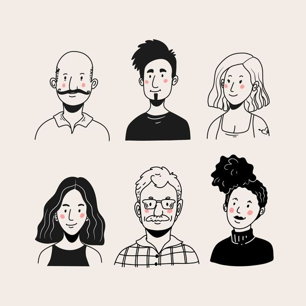
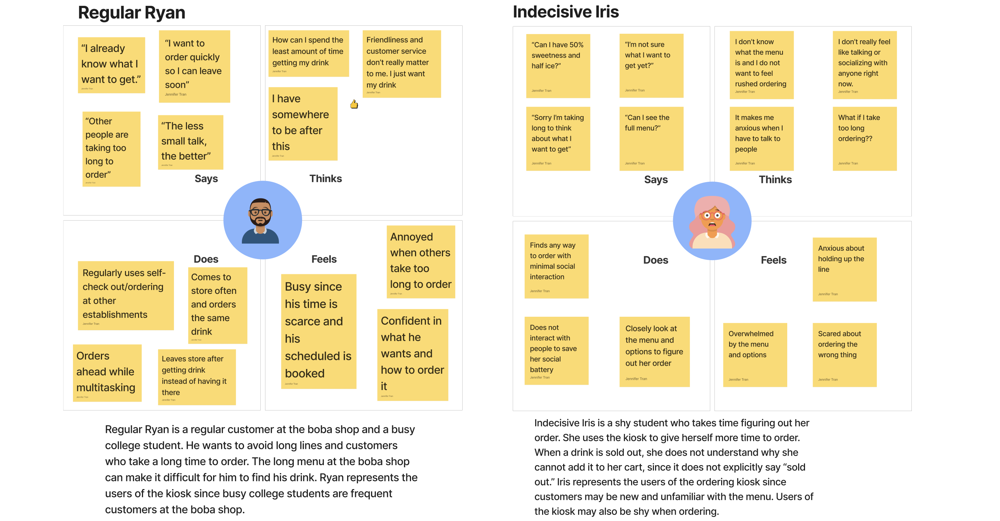

projects
personas

To further explore user experience and human-centered design,
I examined a public interfaced at Ten One Tea, a local boba place shop near Brown University’s Campus. Through
creating personas and user journeys, I was able to practice design thinking skills such as empathizing and ideating.

iterative design
Drawing inspiration from a startup called LunaJoy, I employed design thinking and principles to create an interface for hollistic mental
health care for women.
a/b testing

Using statistics to help examine user experience, I created two different prototypes of an ordering website.